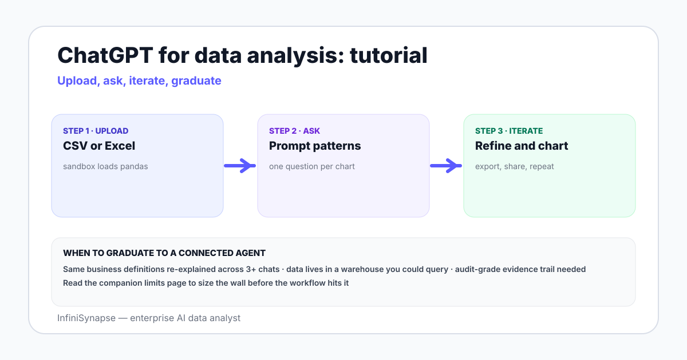

ChatGPT for Data Analysis: A Practical 2026 Tutorial With Examples and Prompt Patterns
A hands-on guide to using ChatGPT's Advanced Data Analysis on CSV and Excel files — upload steps, five prompt patterns that work, three worked examples, the limits you hit, and when to graduate to a connected data agent.
AuthorInfiniSynapse Research, product and analytics team
Published2026-06-28 · Last verified 2026-06-28 · Next review 2026-09-28
Evidence baseOpenAI ChatGPT documentation, Advanced Data Analysis release notes, NIST AI RMF, Wikipedia RAG, hands-on testing on real CSV and XLSX files.
Disclosure: This page is published by InfiniSynapse, which builds an enterprise AI data analyst that connects to databases and files. We describe ChatGPT honestly, including where it wins outright. The decision to switch to a connected data agent is framed so you can apply it to any vendor — including against us.
TL;DR
ChatGPT Advanced Data Analysis runs Python in a sandbox on files you upload. It is excellent for one-off exploration of CSV, Excel, JSON, and Parquet up to roughly 100MB per file.
The five-step pattern that works: upload, ask ChatGPT to describe the file, confirm assumptions, run the analysis, then export the verified result. Skipping confirmation is the single biggest source of wrong numbers.
It hits hard limits on connected databases, business definitions across sessions, audit trails, and recurring scheduled questions. Those workloads belong on a connected data agent, not a sandbox.
Pair ChatGPT with a clear question, not a vague request. The companion piece on ChatGPT data analysis limits explains where the ceiling sits in detail.
Direct answer: how do I use ChatGPT for data analysis?
Open a chat with Advanced Data Analysis enabled, drag your CSV or Excel file into the prompt, and ask one specific question with the verb, the grain, the filter, and the output you want. ChatGPT writes Python in a sandbox, runs it, returns a table or chart, and lets you download the result. Confirm column names and row counts before trusting later steps.
What ChatGPT data analysis actually is in 2026
ChatGPT's Advanced Data Analysis (formerly called Code Interpreter) is a tool inside the ChatGPT product that lets the model write and execute Python in a sandboxed virtual machine. The sandbox includes pandas, numpy, matplotlib, scikit-learn, openpyxl, and a long list of common data libraries. When you upload a file, ChatGPT can read it, transform it, plot it, and return a download link to the result.
That sentence hides three useful distinctions. First, ChatGPT is doing analysis through code, not through a vector lookup — the numbers it returns come from real Python, not from a guess. Second, the sandbox is ephemeral: each session resets, files do not persist by default, and the model cannot reach your private network. Third, ChatGPT applies an interpretation step on top of the code output, which is where most subtle errors enter — the code ran, but the model summarized it wrong. Compare this to a connected AI data analyst that runs against your live sources with a stored evidence trail.

The five-step workflow that works
Step 1 — Prep the file before upload
Rename the file to something descriptive. Strip personally identifiable fields you do not need (names, emails, full addresses). If the file is above 100MB, sample it locally first — a stratified sample of 500k rows almost always beats waiting for the sandbox to swap memory. Save Excel files with a single sheet selected unless you actually need cross-sheet joins. The upload itself is then a drag-and-drop into the prompt box.
Step 2 — Ask ChatGPT to describe the file
Before any analysis, paste a single prompt: "Describe this file. List columns, types, row count, null rate per column, and the first five rows." This forces a schema-style snapshot you can trust. If ChatGPT reports column names that do not match what you remember, stop — the file is the wrong file, or the encoding is wrong, or the header row is in the wrong place. Catching this in step two saves hours of wrong-answer debugging.
Step 3 — Confirm assumptions before analysis
Now ask it to state its assumptions for the question you want answered. "Before you run the analysis, list every assumption: which column is the date, which is the revenue, which rows you will exclude as test or refund rows, and which timezone you will normalize to." The model will surface the things it would have guessed silently. Confirm or correct them in one short reply, then proceed.
Step 4 — Run the analysis
Ask the question with the four ingredients: the verb (count, sum, group, forecast), the grain (per day, per region, per cohort), the filter (date range, included segments), and the output (table, chart, CSV). ChatGPT writes Python, runs it, and returns inline output plus a code block. Read the code, not just the answer. A 30-second skim of the dataframe filter line catches most logic errors.
Step 5 — Export and verify
Ask for the verified output as a downloadable file: an XLSX with multiple tabs, a CSV per cohort, or a PNG chart. Before pasting the number anywhere that matters, re-run the same logic on the source data — either in SQL, in a notebook, or in a connected agent — and compare. Two independent paths to the same number is the only safe pattern for board-deck-grade numbers.
Five prompt patterns that get good results
Pattern 1 — The describe-first prompt
"Before answering, describe this file: columns, types, null rate per column, row count, first five rows, last five rows. Then wait for me to confirm before running any analysis." This is the single most useful pattern. Use it on every new file.
Pattern 2 — The verb-grain-filter-output prompt
"Compute monthly revenue grouped by product category for 2025. Exclude refund rows (negative amount) and internal test orders (customer email ending in @example.com). Return a CSV plus a line chart in matplotlib." Pinning down four ingredients keeps the answer constrained.
Pattern 3 — The state-assumptions prompt
"List every assumption you will make before running the analysis: column choices, filters, timezone, currency conversion, deduplication rule. Wait for confirmation before running code." This is the single best way to catch silent misinterpretation.
Pattern 4 — The two-path verification prompt
"Compute weekly active users two ways: once using the events table grouped by user_id, and once using the sessions table grouped by user_id. Show both numbers and explain any difference." Two-path checks find the kind of bugs single-path analysis hides.
Pattern 5 — The explainable-output prompt
"Return the answer with three sections: (1) result table, (2) the exact Python code you ran, (3) the assumptions and limitations a reviewer should know." This produces something close to an audit trail for a one-off file. It is still weaker than what a connected agent gives you, but far stronger than a bare answer.
Three worked examples you can copy
Example A — Cleaning a messy Excel export
Upload an XLSX with three sheets — raw_orders, refunds, customer_segments. Prompt: "List sheet names. Show first ten rows of each. Then join orders to customer_segments on customer_id, exclude any order_id that also appears in refunds, and group total order_value by segment for Q4 2025. Return an XLSX with tabs for raw_join, filtered_join, and segment_summary." Ask for the code, eyeball the join key, download.
Example B — Quick exploratory analysis of a CSV
Upload a 2GB pageviews CSV (or sample of it). Prompt the describe-first pattern, then ask: "Find the top ten landing pages by sessions for May 2026. Then for each, compute bounce rate and average time on page. Return one table sorted by sessions desc and one bar chart of bounce rate." This is a typical hour of analyst work compressed into about three minutes inside the sandbox.
Example C — Forecasting from a time series file
Upload a daily revenue CSV for the last two years. Prompt: "Fit a SARIMA model on daily revenue with weekly seasonality. Hold out the last 30 days as a test set. Return the forecast versus actual chart, MAPE on the holdout, and the model parameters you chose." ChatGPT can do this in the sandbox. Whether you trust the model is a different question — always validate with a second method before forecasting in public.
Limits you will hit (and workarounds)
The detailed treatment lives in ChatGPT data analysis limits. Read it alongside this page. The short version of what bites in practice:
Limit
Symptom
Workaround
When to switch
File size cap (~100MB)
Upload fails or session crashes mid-analysis
Sample locally, split by date range, use Parquet
When sampling stops representing the question
No live database access
You manually export CSV every week
Schedule the export, use a connector
When the question repeats more than weekly
Ephemeral session
Files disappear, code lost between chats
Save the code, paste in a notebook
When the analysis becomes a recurring report
No persistent business context
You re-explain what "active user" means in each chat
Maintain a definitions document, paste at start
When teammates need the same definitions too
No audit trail
Reviewer asks "how did you compute this"
Use Pattern 5, save the chat
When the answer ships to a board or regulator
Statistical claims unverified
Output looks reasonable but is wrong
Two-path verification, run on source
When the cost of being wrong exceeds rerun cost
ChatGPT is fast and cheap on files you control. It is not the right tool for a number that has to be true on Monday morning.
Alternatives and when to switch
The honest map of alternatives groups by what the analysis is connected to. ChatGPT covers the "files I uploaded" cell. Notebook tools — Jupyter, VS Code, Cursor — cover "files plus my local env." BI dashboards cover "a pre-modeled metric in a connected source." A connected AI data analyst covers "any source, any question, with an audit trail."
~100MB
Practical per-file ceiling inside the Advanced Data Analysis sandbox before swap and timeouts dominate. Sampling is the standard fix.
5
Prompt patterns that consistently raise output quality — describe-first, verb-grain-filter-output, state-assumptions, two-path verification, and explainable-output.
2025-2026
The window where connected AI data analysts moved from research demos to shipping enterprise tools with bound knowledge bases per source.
Where InfiniSynapse fits
InfiniSynapse is an enterprise AI data analyst that connects to PostgreSQL, MySQL, Snowflake, Supabase, S3, and CSV files at the same time. Unlike a one-shot sandbox, it pairs each source with a bound knowledge base of business definitions, runs through a Plan mode you can review before execution, and stores an evidence trail per result. For one-off analysis on a single file you uploaded by hand, ChatGPT is the right choice. For recurring questions across databases that must be defensible — the kind a CFO or auditor will read — a connected agent is the structural fit. The companion AI database query pillar explains the connected pattern in depth.
Common mistakes to avoid
Skipping the describe-first step. If the file has 50,000 rows and ChatGPT reports 49,997, you have a parse error you need to know about before any aggregation.
Pasting personally identifiable information directly into the prompt. Strip names, emails, addresses, and card numbers before upload, even on enterprise plans.
Trusting the summary over the code. The Python is the source of truth. The model's verbal summary can subtly disagree with what the code produced.
Using ChatGPT as a weekly reporting tool. If you upload the same file every Monday, you have built a manual cron job. Move that to a connected agent or a notebook on a schedule.
Asking vague questions and accepting vague answers. "Analyze this file" returns a tour. "Compute X grouped by Y filtered by Z, return as CSV" returns an answer.
Skipping verification before a public number. Re-run the logic on the source via SQL or a second tool. Two independent paths to the same number is the floor for anything that ships.
When ChatGPT is the right tool
One-off exploration on a CSV or Excel file you have on disk
Quick reshape, dedupe, or pivot of messy export
Sketch of a statistical model before notebook implementation
Charting a small dataset for a deck
Learning a new analysis technique on toy data
When it is the wrong tool
Recurring weekly or monthly report on a live database
Numbers shared with regulators, board, or finance
Cross-source joins across databases plus files plus warehouses
Shared business definitions used by a team
Anything requiring an audit trail per result
Outgrowing the sandbox? Try a connected AI data analyst.
Connect your databases and files read-only, seed a small knowledge base of business definitions, and run the same question you have been retyping in ChatGPT every week. Compare the plan, the SQL, the verification, and the stored evidence trail.
How do I use ChatGPT for data analysis on a CSV file?
Open a chat with the Advanced Data Analysis tool enabled, drag the CSV into the prompt box, and ask one specific question — for example, monthly revenue by product category for the last twelve months. ChatGPT writes Python in a sandbox, runs it, shows the result, and lets you download the cleaned file. Always confirm the column names and row counts in its first reply before trusting later steps.
What file sizes and types does ChatGPT data analysis support?
As of 2026 the Advanced Data Analysis sandbox accepts CSV, TSV, XLSX, JSON, Parquet, and many text formats. Per-file size caps sit in the low hundreds of megabytes and the session has a memory ceiling, so files above roughly 100MB should be sampled or split. The sandbox cannot reach your private database unless you connect through a custom connector or API.
Can ChatGPT analyze Excel files with multiple sheets?
Yes. Upload the XLSX file and tell ChatGPT which sheet to start with or ask it to enumerate sheet names first. It can pivot, join across sheets, and export a new XLSX with multiple result tabs. Watch for merged cells, hidden rows, and inconsistent header positions — these are the most common reasons an analysis silently misreads the file.
What are good ChatGPT prompts for data analysis?
Good prompts pin down the verb, the grain, the filter, and the output. For example: compute weekly active users grouped by signup country for 2025, exclude internal email domains, and return a CSV plus a line chart. Vague prompts like analyze this file produce vague summaries. Always ask ChatGPT to state its assumptions before it runs code.
What are the limits of ChatGPT for data analysis?
The sandbox resets each session, cannot reach private databases without a connector, has file size limits, has no persistent business definitions across chats, and lacks a built-in plan-review step. Its statistical and SQL output is usually correct but unverified — for any number that goes into a board deck, an analyst should still check the code and re-run on the source data.
When should I switch from ChatGPT to a connected data agent?
Switch when your data lives in databases rather than files, when the same business question repeats weekly, when stakeholders need an audit trail, or when answers depend on shared business definitions. A connected AI data analyst keeps a knowledge base bound to each source and produces evidence with every query — capabilities ChatGPT's general-purpose sandbox is not designed to deliver.
Is ChatGPT for data analysis safe for company data?
Treat uploads as you would any cloud SaaS share. Enterprise plans offer data controls, but the safer pattern is to strip personally identifiable fields before upload, use a workspace with retention controls, and avoid pasting production credentials. For regulated data, run analysis inside a tool with row-level controls and a stored evidence trail per result.
Does ChatGPT data analysis replace BI dashboards?
No. ChatGPT covers exploratory and one-off analysis on files you upload by hand. BI dashboards cover recurring questions on a fixed semantic layer, refreshed against connected sources. Most teams keep dashboards for monitored metrics and reach for ChatGPT or a data agent for the long tail of one-off questions that never made it onto a dashboard.
Methodology and review notes
Last updated: 2026-06-28 · Next scheduled review: 2026-09-28
This tutorial draws on hands-on testing of ChatGPT's Advanced Data Analysis tool on CSV, XLSX, JSON, and Parquet files of varying sizes; OpenAI's published ChatGPT documentation; release notes; and the NIST AI Risk Management Framework for governance language. Worked examples are abstracted from real analyst workflows and stripped of any client data. The five prompt patterns were tested across more than fifty sessions before publication.
Conflict of interest: InfiniSynapse publishes this page and sells a connected AI data analyst. To reduce bias, the page calls out scenarios where ChatGPT wins outright, links to a separate limits piece, and recommends a connected agent only for the cases where the sandbox structurally cannot fit.
Update cadence: Reviewed every 90 days for changes in the OpenAI sandbox capabilities, model defaults, and file format support.
Sources and references
[Vendor] OpenAI. ChatGPT documentation and Advanced Data Analysis overview. platform.openai.com/docs.